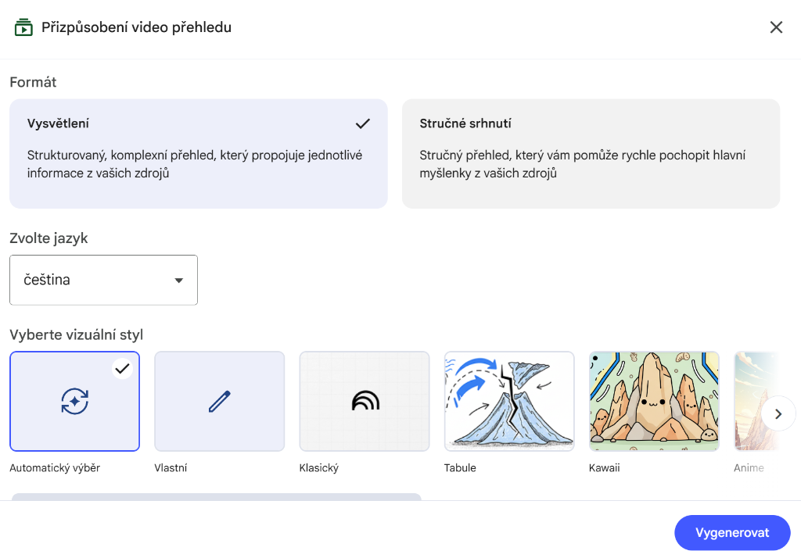
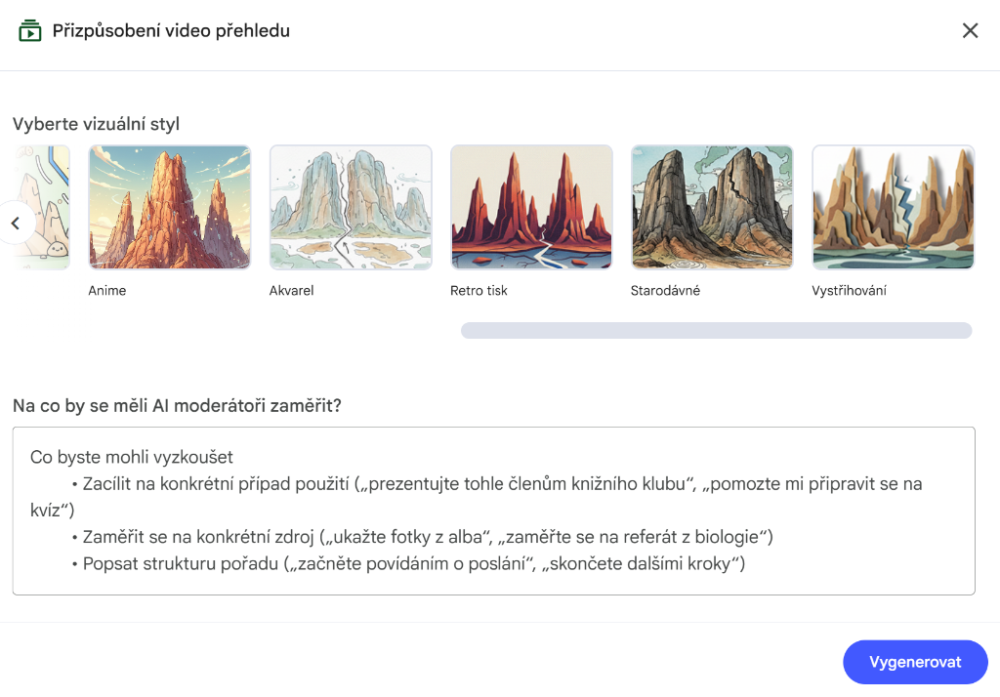

Po kliknutí na "Video přehled" se zobrazí dialog s nastavením:

V dialogu můžete specifikovat, na co se má video zaměřit. Můžete také vybrat délku videa (krátké nebo výchozí).
Video přehled využívá různé vizuální styly a animace pro lepší pochopení:

Video obsahuje animace, diagramy, grafy a další vizuální prvky pro snadnější pochopení obsahu.
Tipy pro Video přehled
Délka videa
Video typicky trvá 5-15 minut. Můžete specifikovat: "Vytvoř krátké 3minutové video úvod"
Zaměření obsahu
Pro velké sešity diskutuj v chatu o tématu PŘED kliknutím na Video - AI použije kontext!
Kdy použít
Ideální pro flipované učení, domácí přípravu žáků nebo rychlý vizuální přehled tématu.
Jak cílit video na konkrétní téma
Metody pro fokusované video (bez vytváření nového sešitu):
V chatu: "Vytvoř video přehled pouze o [konkrétní téma] z dokumentu [název]"
Pak klikni na Video v Studio.
- Nejprve diskutuj v chatu o tématu které chceš ve videu
- AI si vytvoří kontext a pochopí co tě zajímá
- Pak klikni na Video - AI použije kontext konverzace!
Příklad:
- "Popiš strukturu politických stran podle dokumentu '10. Politická strana'"
- AI odpoví
- "Rozveď více o volební kampani"
- AI rozve
- "Vytvoř video přehled z této konverzace"
- Klikni na Video › získáš video zaměřené přesně na politické strany!
"Vygeneruj video z informací na straně 15-20 dokumentu XYZ"
Pro nejlepší výsledky kombinuj metody:
- V chatu vytvoř shrnutí tématu které chceš ve videu
- Řekni "Vytvoř video z tohoto shrnutí"
- NotebookLM použije váš chat jako základ pro video!
Video přehled vs. Prezentace - co kdy použít?
🎥 Video přehled
Kdy:
- Potřebuješ rychlé vizuální shrnutí
- Chceš sdílet s žáky jako domácí přípravu
- Vytváříš flipované učení
📽️ Prezentace
Kdy:
- Potřebuješ osnovu pro živý výklad
- Chceš kontrolovat tempo a detaily
- Prezentuješ na meetingu nebo konferenci
Praktické příklady použití
Flipované učení a vizuální úvody
AI generované video pro domácí přípravu
ℹ️ Co to je
NotebookLM vytvoří animované video vysvětlující vaše zdroje. Video obsahuje vizualizace, animace a hlasový doprovod vysvětlující klíčové koncepty.
🎯 Ideální pro
- Flipované učení - žáci sledují doma před hodinou
- Vizuální úvod k novému tématu
- Shrnutí kapitoly do digestibilní formy
- Alternativní formát pro žáky s různými učebními styly
Scénář: Chceš, aby žáci měli vizuální přehled o fotosyntéze před hodinou.
Workflow:
- Nahraj kapitolu o fotosyntéze do NotebookLM
- V chatu: "Vytvoř shrnutí fotosyntézy zaměřené na základní proces, vstupy a výstupy"
- AI vytvoří textové shrnutí
- Řekni: "Použij toto shrnutí jako základ pro video přehled"
- Klikni na Video v Studio
- Sdílej video se žáky jako domácí přípravu
🏆 TOP 10 Nejužitečnějších Use Cases pro Video
Vybrali jsme pro vás 10 nejpraktičtějších způsobů využití AI videí v každodenní výuce.
Flipované učení - video úvod
Pro: Domácí přípravu studentů
Vysvětlení složitého procesu krok za krokem
Pro: Vizualizaci obtížných témat
Vizualizace abstraktních konceptů
Pro: Zjednodušení těžko pochopitelných témat
Motivační úvod k novému tématu
Pro: Zaujetí studentů hned na začátku
Shrnutí kapitoly do digestibilní formy
Pro: Rychlé opakování látky
Jazyková výuka s kontextem
Pro: Výuku cizích jazyků s kontextem
Historický přehled události
Pro: Chronologické vysvětlení dějinných událostí
Srovnání dvou jevů vedle sebe
Pro: Komparativní učení
Tutoriál na složitý postup
Pro: Laboratorní či praktické činnosti
Video příklad pro absentéry
Pro: Žáky, kteří chyběli
Máme pro vás připravené prompty s možností kopírování!
📖 Prohlédněte si databázi promptů ›Máme pro vás připravených celkem 30 způsobů použití video funkcí! Prohlédněte si kompletní katalog včetně všech promptů.
📖 Zobrazit všech 30 Video Use Cases ›